Contents
- Communication at Opportunity Sim -- Square Boundary Analysis
- General Analysis -- Infinite path length, single iteration simulations
- 4, 8, 16, 32 Agent Inf Horizon Test in 20x20 Box
- 4, 8, 16, 32 Agent Inf Horizon Test in 40x40 Box
- 4, 8, 16, 32 Agent Inf Horizon Test in 80x80 Box
- General Analysis -- 240 path length, multi-start simulations
- 4, 8, 16, 32 Agent Multi-Start Test in 20x20 Box
- 4, 8, 16, 32 Agent Multi-Start Test in 40x40 Box
- 4, 8, 16, 32 Agent Multi-Start Test in 80x80 Box
Communication at Opportunity Sim -- Square Boundary Analysis
By: Patrick Ledzian Date: 10 April 2022
% Overview: % Generate simulation data to provide insight as to how often agents % interact when bouncing around in a closed, axis-aligned square boundary. % Each agent chooses a new random heading (uniform distribution [0, pi)]) % whenever it intersects with a boundary. Longer-term goal is to determine % what conditions result in reliably connected communications graphs % between agents, independent of agent starting position. As well as to % determine how long agents must randomly interact before said % communication graphs are connected. % close all clear all clc a = SimAnalysis();
General Analysis -- Infinite path length, single iteration simulations
With square axis-aligned boundaries the chance of random communication between non-coordinating agents appears to be stationary with-respect-to the number of agents. However, the transients behavior (rise-time) is shorter the more agents that are present. Also note that as the area of the boundaries increases the chance of communication goes down. A target for future work is to intelligently manipulate the distribution agents choose new random headings from, maybe from local interactions (comms). This should also be balanced with the transient (rise-time) behavior to meet mission needs (vehicle specs, on-scene time, power management, etc).
xgen = [400, 1600, 6400]; ygen = [0.96, 0.9925, 0.9975]; figure() plot(xgen, ygen) xlabel("Boundary area") ylabel("Probability of no communication") title("Trend of no communication vs Boundary area") ylim([0.9 1.0])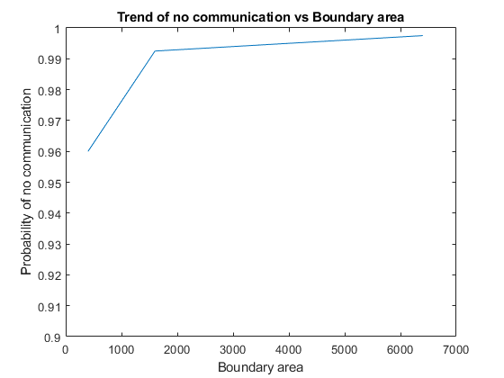
4, 8, 16, 32 Agent Inf Horizon Test in 20x20 Box
Results: 4-Agent case: converges to [0.970, 0.974] 8-Agent case: converges to [0.969, 0.975] 16-Agent case: converges to [0.969, 0.976] 32-Agent case: converges to [0.969, 0.976]
bounds = [0 20; 0 20]; a.steadyStateCommProb(bounds, 4, 100000, 1); % bounds, numAgents, N, sim_itrs a.steadyStateCommProb(bounds, 8, 100000, 1); a.steadyStateCommProb(bounds, 16, 100000, 1); a.steadyStateCommProb(bounds, 32, 100000, 1); SimAnalysis.clearEmptyFigs(); % closes figures without titles (for empty ones!)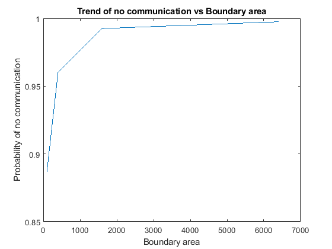 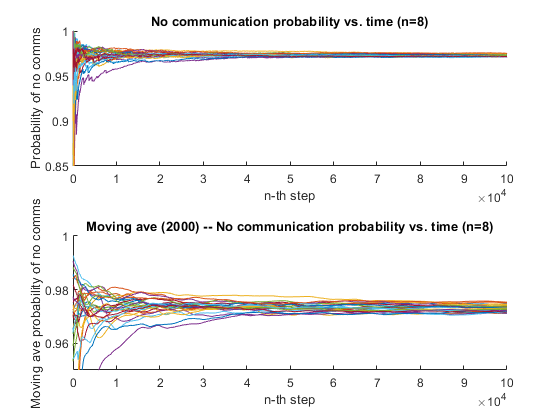 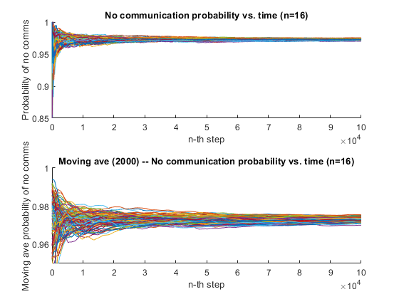 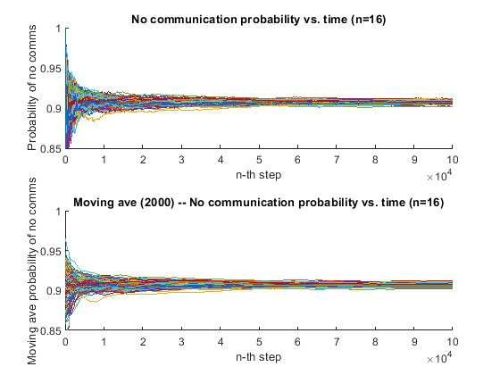
4, 8, 16, 32 Agent Inf Horizon Test in 40x40 Box
Results: 4-Agent case: converges to [0.991, 0.994] 8-Agent case: converges to [0.990, 0.993] 16-Agent case: converges to [0.991, 0.994] 32-Agent case: converges to [0.990, 0.994]
bounds = [0 40; 0 40];
a.steadyStateCommProb(bounds, 4, 100000, 1); % bounds, numAgents, N, sim_itrs
a.steadyStateCommProb(bounds, 8, 100000, 1);
a.steadyStateCommProb(bounds, 16, 100000, 1);
a.steadyStateCommProb(bounds, 32, 100000, 1);
SimAnalysis.clearEmptyFigs();
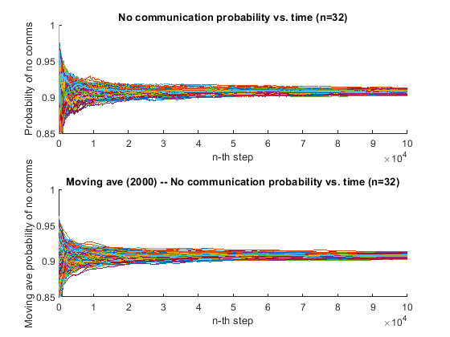 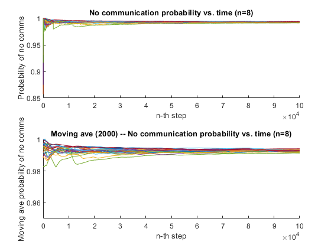 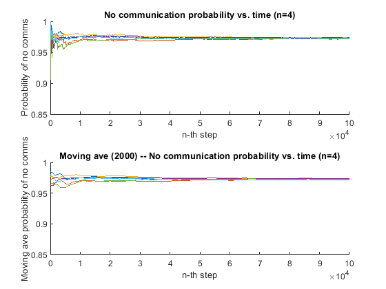 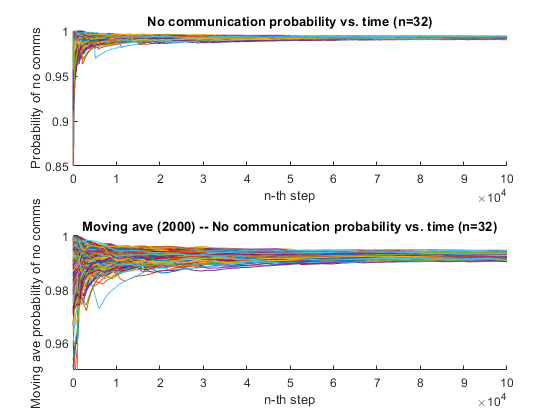 4, 8, 16, 32 Agent Inf Horizon Test in 80x80 Box
Results: 4-Agent case: converges to [0.997, 0.998] 8-Agent case: converges to [0.997, 0.998] 16-Agent case: converges to [0.996, 0.998] 32-Agent case: converges to [0.996, 0.998]
bounds = [0 80; 0 80];
a.steadyStateCommProb(bounds, 4, 100000, 1); % bounds, numAgents, N, sim_itrs
a.steadyStateCommProb(bounds, 8, 100000, 1);
a.steadyStateCommProb(bounds, 16, 100000, 1);
a.steadyStateCommProb(bounds, 32, 100000, 1);
SimAnalysis.clearEmptyFigs();
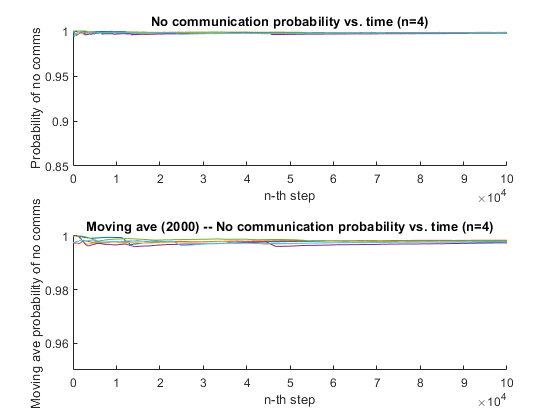 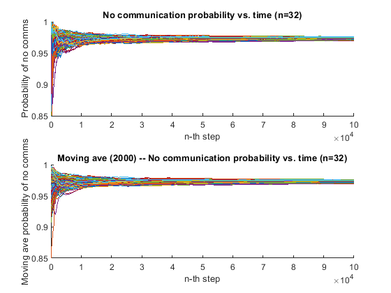 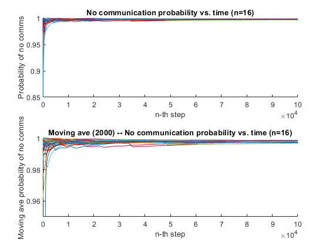 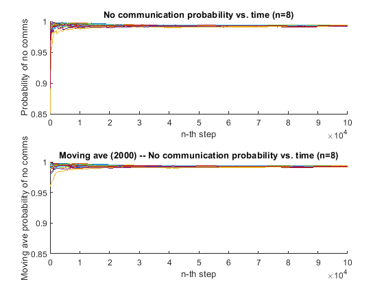 General Analysis -- 240 path length, multi-start simulations
Analysis: For axis-align square boundaries the average number of steps with communication drops off sharply as the boudary area increases, but seems stationary (wrt the mean) to the number of agents. It should be noted that the std. deviation of the average number of steps in communication appears to increase as the number of agents increases. We can also note that the number of multi-start iterations with at least one agent pairing experiencing no communications increases sharply from the 20x20 bounds to 40x40 and beyond. We know that any iteration with two agents experiencing no communication results in an un-connected graph, which needs to be avoided. This is a target for future work.
xgen = [400, 1600, 6400]; ygen = [6.64, 1.935, 0.57]; figure() plot(xgen, ygen) xlabel("Boundary area") ylabel("Average steps w/ communication") title("Ave number of steps with communication vs Boundary area") ylim([0 7.0])

4, 8, 16, 32 Agent Multi-Start Test in 20x20 Box
Results: 4-Agent case: ave comms [6.52, 6.75]; no comms itrs [318, 372] 8-Agent case: ave comms [6.51, 6.88]; no comms itrs [297, 388] 16-Agent case: ave comms [6.44, 6.85]; no comms itrs [299, 380] 32-Agent case: ave comms [6.41, 6.92]; no comms itrs [292, 397]
bounds = [0 20; 0 20];
a.multiStartData(bounds, 4, 240, 5000); % bounds, numAgents, N, sim_itrs
a.multiStartData(bounds, 8, 240, 5000);
a.multiStartData(bounds, 16, 240, 5000);
a.multiStartData(bounds, 32, 240, 5000);
SimAnalysis.clearEmptyFigs();
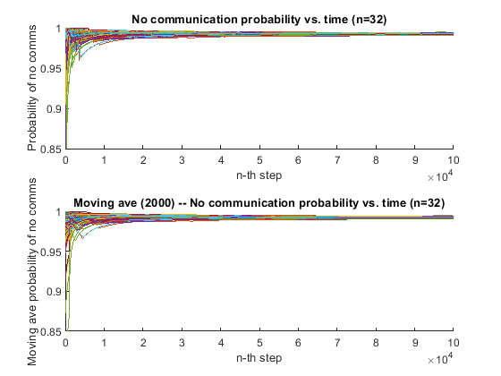 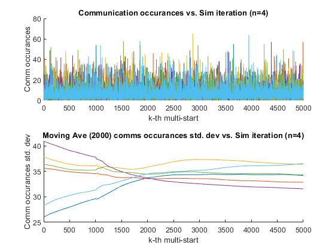 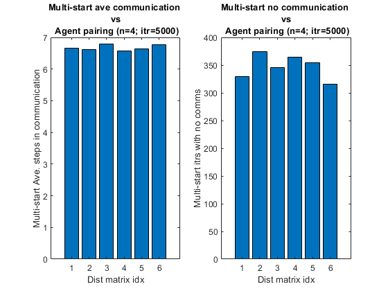 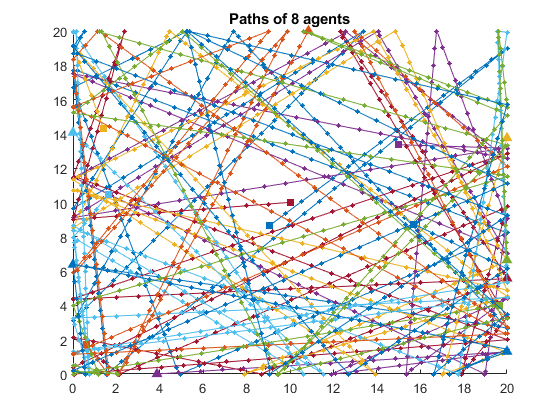  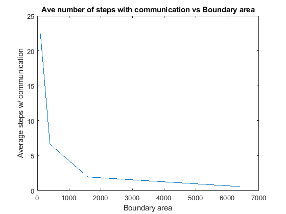 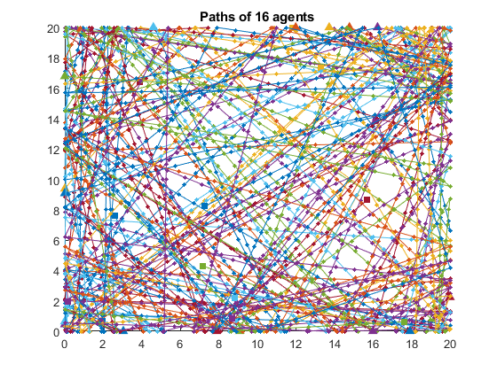 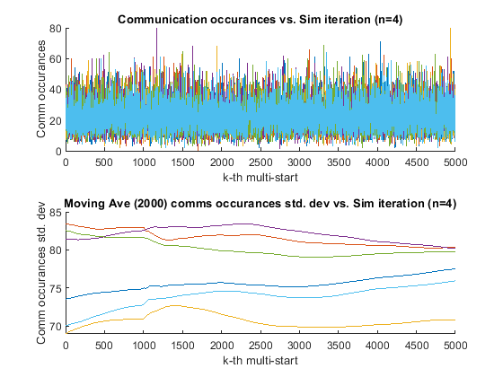 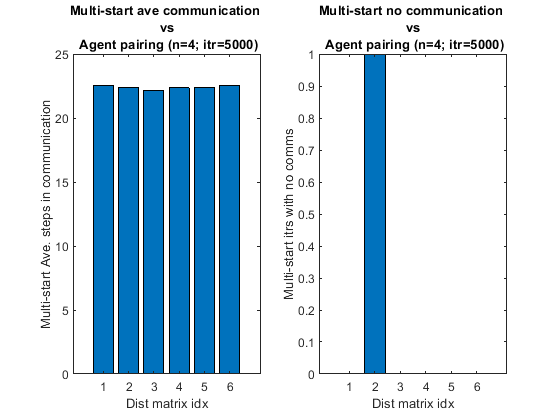 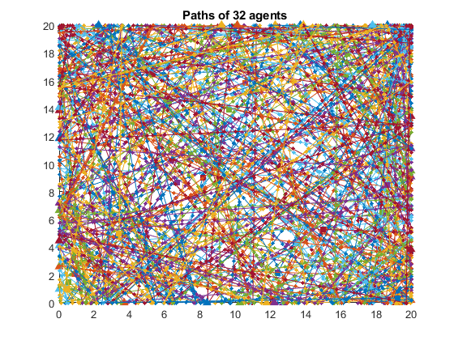 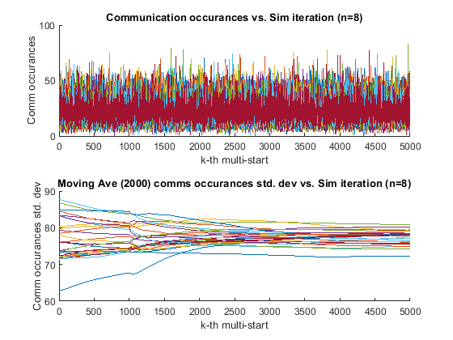 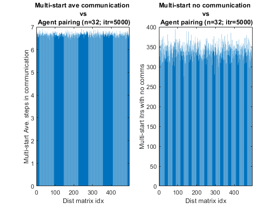
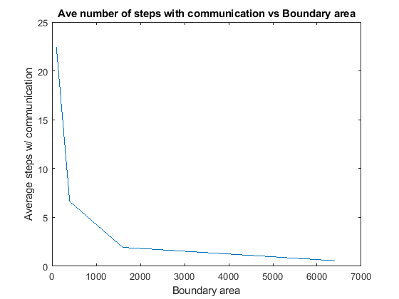 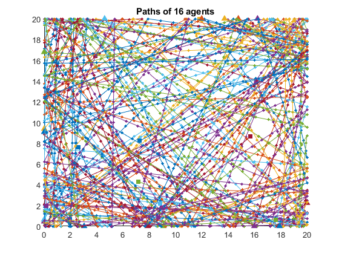 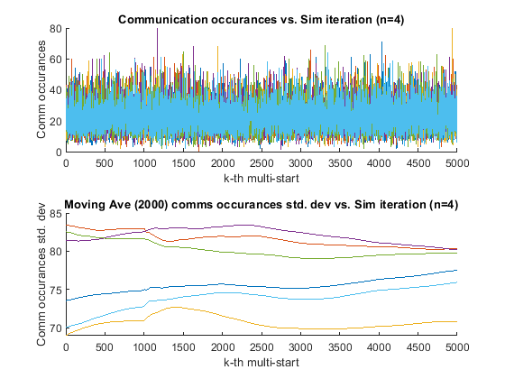 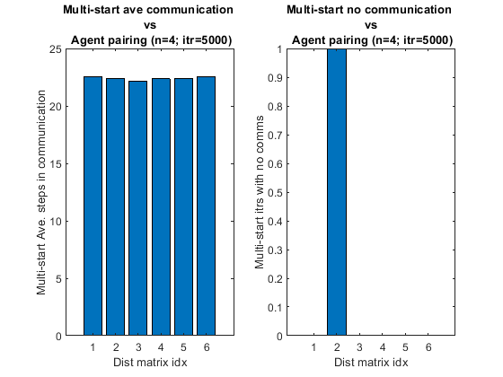 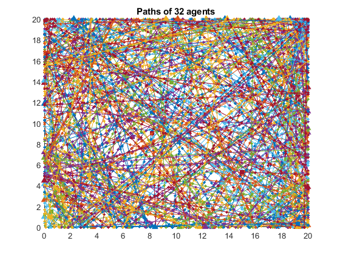 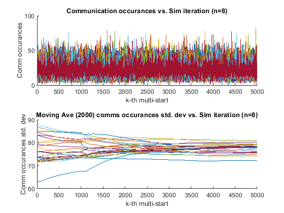 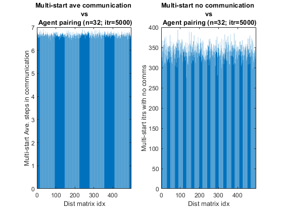 4, 8, 16, 32 Agent Multi-Start Test in 40x40 Box
Results: 4-Agent case: ave comms [1.86, 2.01]; no comms itrs [2389, 2474] 8-Agent case: ave comms [1.82, 2.03]; no comms itrs [2342, 2491] 16-Agent case: ave comms [1.82, 2.09]; no comms itrs [2322, 2507] 32-Agent case: ave comms [1.76, 2.06]; no comms itrs [2334, 2515]
bounds = [0 40; 0 40];
a.multiStartData(bounds, 4, 240, 5000); % bounds, numAgents, N, sim_itrs
a.multiStartData(bounds, 8, 240, 5000);
a.multiStartData(bounds, 16, 240, 5000);
a.multiStartData(bounds, 32, 240, 5000);
SimAnalysis.clearEmptyFigs();
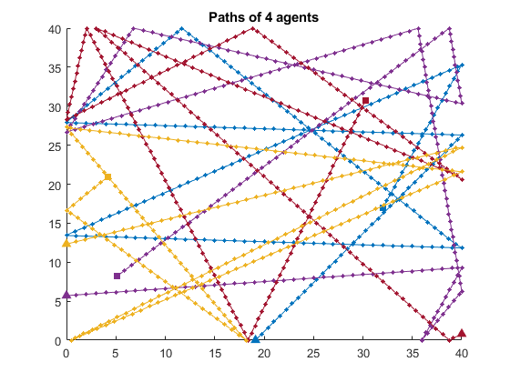 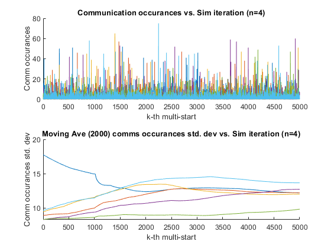 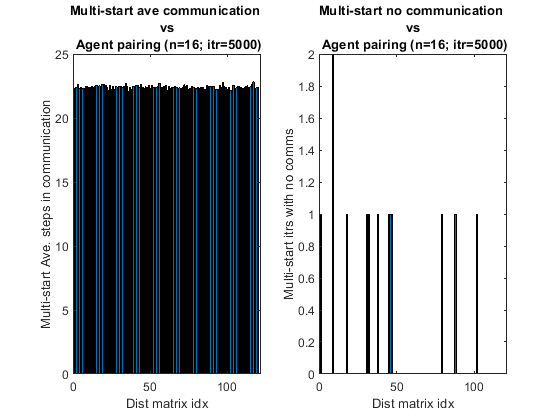 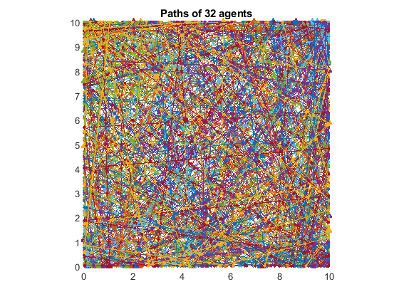 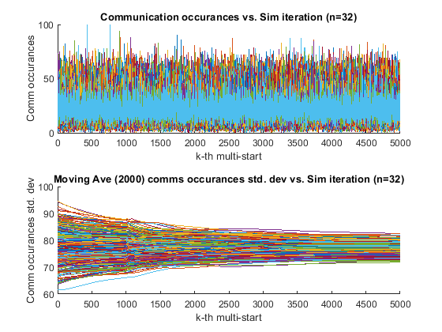 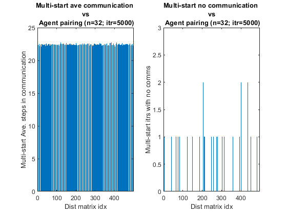 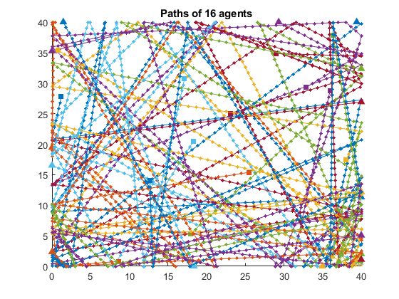 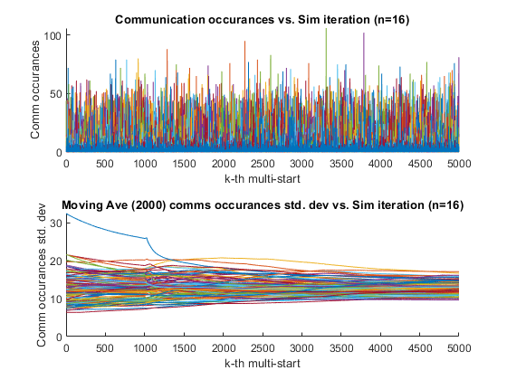 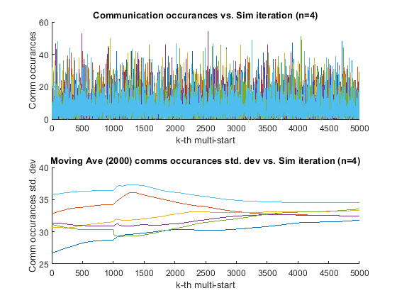 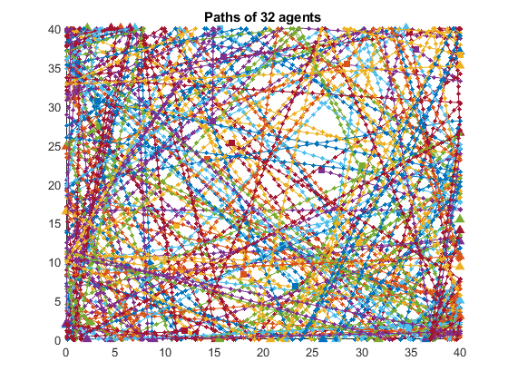 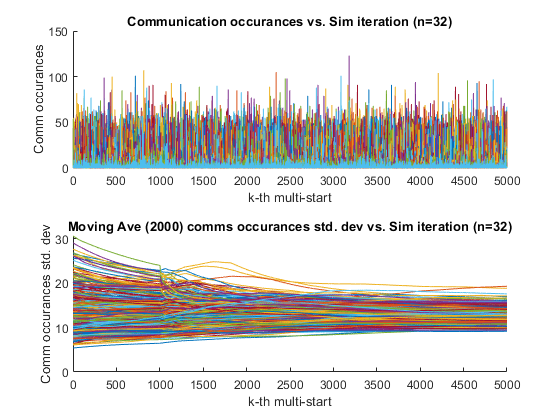 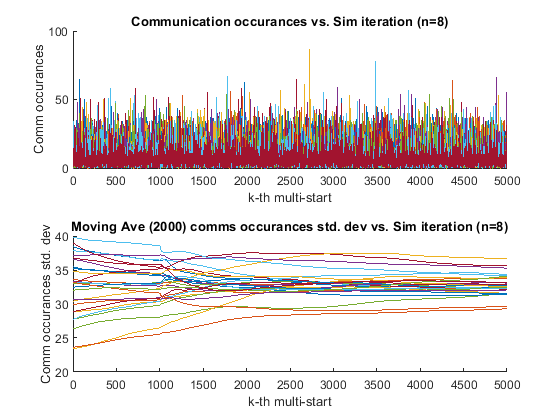 4, 8, 16, 32 Agent Multi-Start Test in 80x80 Box
Results: 4-Agent case: ave comms [0.53, 0.61]; no comms itrs [4064, 4119] 8-Agent case: ave comms [0.49, 0.62]; no comms itrs [4031, 4140] 16-Agent case: ave comms [0.49, 0.69]; no comms itrs [4034, 4145] 32-Agent case: ave comms [0.49, 0.72]; no comms itrs [4026, 4166]
bounds = [0 80; 0 80]; a.multiStartData(bounds, 4, 240, 5000); % bounds, numAgents, N, sim_itrs a.multiStartData(bounds, 8, 240, 5000); a.multiStartData(bounds, 16, 240, 5000); a.multiStartData(bounds, 32, 240, 5000); SimAnalysis.clearEmptyFigs(); disp('Done')
Done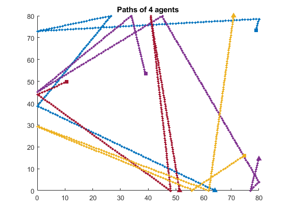 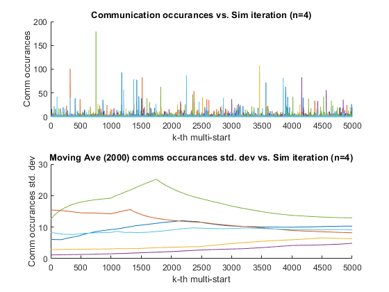 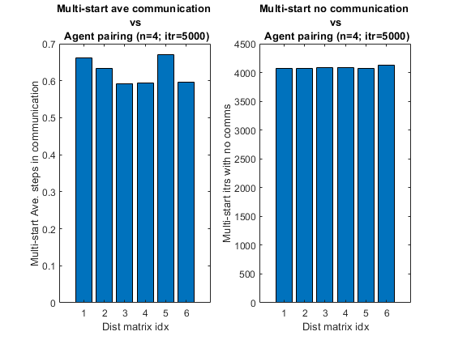 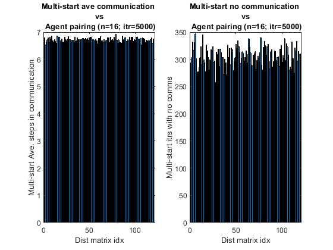 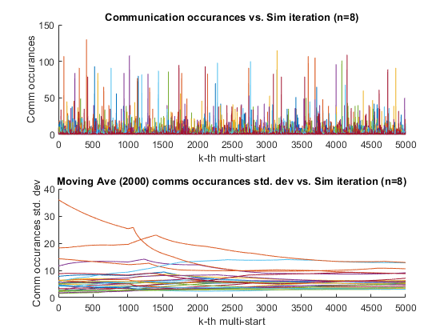 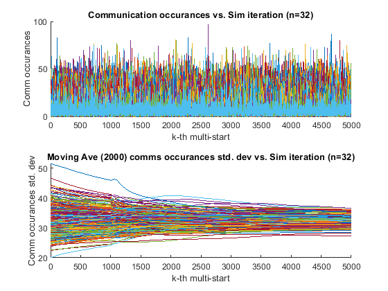 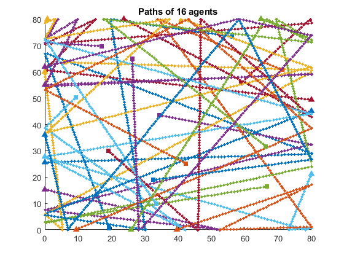     